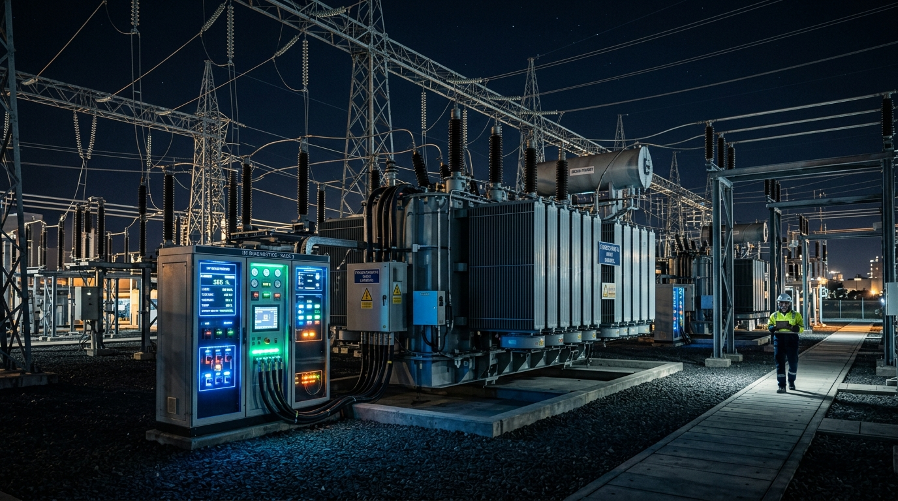

01 / POTENCIA INDUSTRIAL
Sistemas Industriales
INDUSTRIA PESADA Y SUBESTACIONES
Las plantas manufactureras, de refinación y metalurgia demandan bloques masivos de potencia eléctrica. Subestaciones reductoras descienden tensiones de 69 kV o 13.8 kV a niveles de utilización de 480 V trifásicos para accionar compresores, hornos de arco y centros de control de motores (CCM) con factor de potencia compensado.